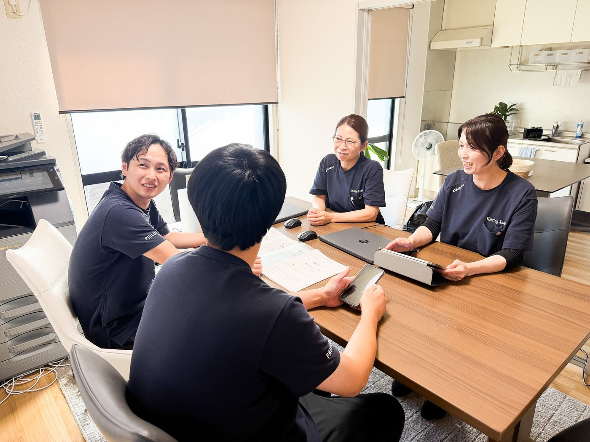
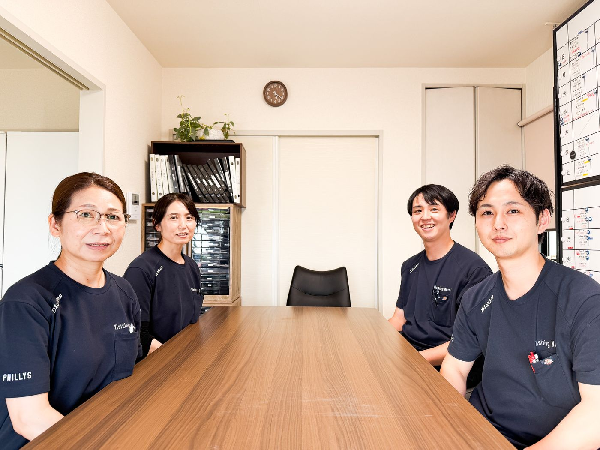
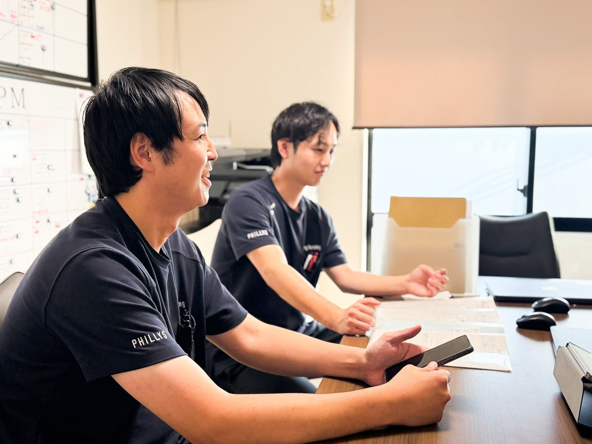
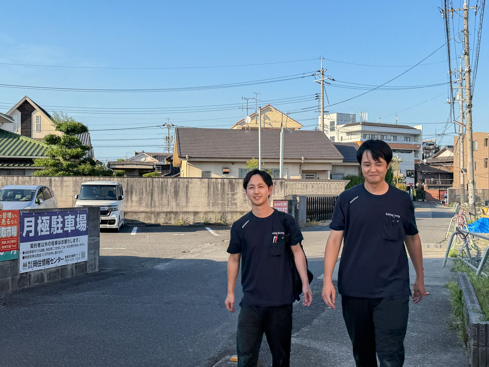

01
訪問看護師
「専門知識は、働きながら少しずつ身につけていきましょう。」
精神科訪問看護、難病・ターミナルケアなど、幅広い看護業務を担当します。最初は経験豊富な先輩スタッフが同行し、利用者様との関わり方やケアの手順を丁寧にお教えします。「初めての訪問看護で不安」という方も、チームでフォローするため安心して一歩を踏み出せます。
img/philosophy.jpg

About
訪問看護フィリーズは、精神科や難病、ターミナルケアなど、さまざまな経験を積んだ看護師やセラピストが集まるチームです。「訪問看護が初めてで不安」「専門知識に自信がない」という方も、どうぞ安心してください。私たちが大切にしているのは、個人の力に頼るのではなく、チームで考え、支え合うこと。どんなときも誰かが必ずそばにいて、質問しやすい空気感をつくっています。
また、スタッフ一人ひとりの生活も大切にしたいと考えています。高い専門性を学びながら、無理なく、長く活躍できる。そんな「プロとしての安心感」を、フィリーズで体感してみませんか？

チームで考えるひとりで抱え込まず、みんなで支え合います。

質問しやすい空気先輩がいつもそばにいます。

生活も大切に働き方の希望は、面接でご相談ください。
Work
「ひとりで抱え込まない。」あなたの優しさとプロのチームが、利用者様を支えます。
01
「専門知識は、働きながら少しずつ身につけていきましょう。」
精神科訪問看護、難病・ターミナルケアなど、幅広い看護業務を担当します。最初は経験豊富な先輩スタッフが同行し、利用者様との関わり方やケアの手順を丁寧にお教えします。「初めての訪問看護で不安」という方も、チームでフォローするため安心して一歩を踏み出せます。
02
「生活の質を上げる喜びを、一緒に分かち合いませんか。」
利用者様のご自宅でのリハビリテーションや、日常生活動作のサポートを行います。身体的なケアだけでなく、利用者様やご家族の心に寄り添うことも大切なお仕事です。チームでカンファレンスを行い、多角的な視点でケアプランを考えるため、個人の負担が少なく、高い専門性を身につけられます。

Benefits
残業は月平均4時間程度。定時で退社し、家族との時間や自分の時間を大切にしているスタッフがほとんどです。
無駄な移動時間を減らし、自分や家族の時間を大切にできます。通勤利用も可能(規定あり)。自分専用の車がある感覚で働けます。
職能手当、ベースアップ手当に加え、頑張りがしっかり反映される「訪問手当」もあります。
「訪問リハビリは初めて」という方も大歓迎。入社後は丁寧なサポートがあり、無理なく業務に慣れていただけます。
基本はシフト制ですが、「日曜日は休みたい」「平日固定にしたい」といったご希望は、面接時に何でもお話しください。
FAQ
応募の前によくいただくご質問です。ほかにも気になることがあれば、お気軽にお問い合わせください。
もちろん大歓迎です！「未経験だからこそ、一から丁寧に教える」のがフィリーズの考え方です。入社後は、慣れるまで先輩スタッフが同行訪問を行い、業務の進め方や利用者様との接し方をマンツーマンでサポートします。質問もしやすい雰囲気ですので、焦らずプロの技術を身につけていきましょう。
ご希望を面接時にぜひお聞かせください！シフト制ではありますが、スタッフのライフスタイルを尊重するのがフィリーズ流です。「日曜日は必ず休みたい」「お子様の学校行事がある日は外したい」「平日固定の勤務がいい」など、可能な限り調整いたします。まずはお気軽にご相談ください。
はい、月平均4時間程度です。利用者様との約束を守ることはもちろん大切ですが、同じくらいスタッフのプライベートの時間も守るべきだと考えています。定時で退社し、家族との時間や自分の時間を大切にしているスタッフがほとんどです。
いいえ、社用車を貸与しますのでご安心ください（規定あり）。通勤に利用することも可能です。車の手入れやガソリンの補給なども会社がしっかりサポートします。
ぜひ見学にお越しください！「働いてみたらイメージと違った」というミスマッチを防ぐためにも、実際の現場やスタッフの様子を事前に見ていただくことを推奨しています。少しでも気になったら、お気軽にお問い合わせください。
Entry
「働いてみたらイメージと違った」というミスマッチを防ぐためにも、実際の現場やスタッフの様子を事前に見ていただくことをおすすめしています。少しでも気になったら、お気軽にお問い合わせください。
Contact
ご本人・ご家族・ケアマネジャー・医療機関の方、どなたからのご相談もお受けしています。訪問看護が初めての方も、どうぞ安心してお問い合わせください。